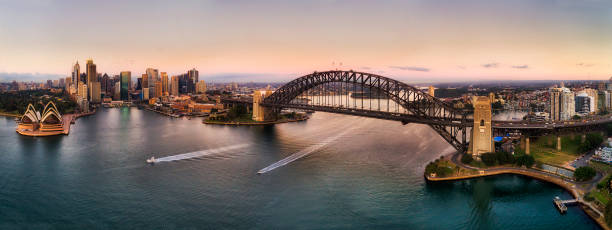
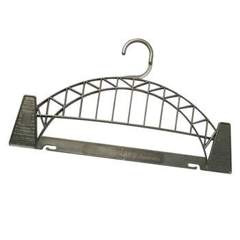

La Bahía de Sydney
(Sydney Harbour)

La Bahía de Sydney se conoce por ser donde se encuentra la Casa de la Opera (Opera House) y el Puente de la Bahía de Sydney (Sydney Harbour Bridge), pero hay mucho más que descubrir. Al pasar algún tiempo aquí es asombroso ver la belleza natural, desde playas escondidas, bosques e islas encantadoras que están hechas para explorar.
El puente de Sydney es humoristicamente conocido como el Colgador de Ropa (coat hanger) por su similitud con nuestros percheros.
Los ferries de Sydney viajan en multiples direcciones - desde la Bahía hacia el Oeste al Rio Parramatta, al Norte hacia Manly y al Este a la Bahía de Watson.
El trayecto en ferry desde la Bahía de Sydney a la Playa de Manly es un hermozo viaje que sólo toma veinte minutos y permite admirar en su plenitud la belleza de la Bahía de Sydney.
Admirando la Bahía de Sydney desde el Opera House.